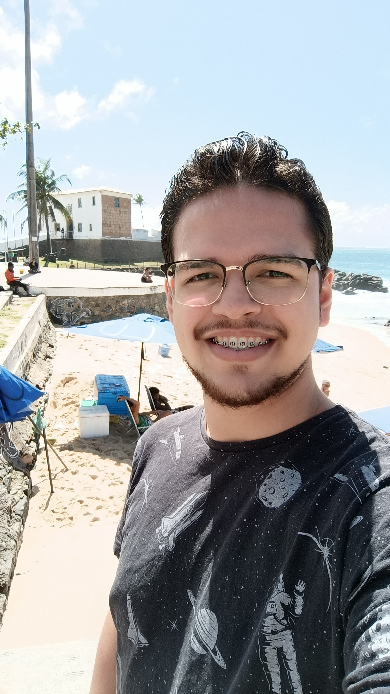

Nascido e criado em Salvador-BA desde jovem sou bastante comunicativo tentando ao maximo me expressar e expor as ideias que tenho, vi na programação uma forma de juntar esse desejo com a minha paixão na área de tecnologia
Foto tirada no porto da barra dia 09/09/2022
Criei uma paixão por Cozinhar e venho cada vez mais treinando com várias receitas diferentes